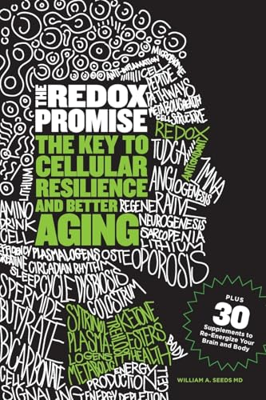

This Is Bigger Than I Expected
When I first looked into this, I thought it was one product for one kind of problem. I was wrong. The deeper I went, the more I realized I had stumbled into something the research world is just beginning to understand — and the rest of us haven't heard about yet.
Let me show you what I found. None of it came from ASEA.

One Disease: Redox Imbalance
In 2021, health researcher Michael Sherer published this book. His thesis: virtually every major chronic disease traces back to the same root mechanism — an imbalance in your body's redox signaling system.
He arrived at this conclusion independently, from the published research alone. He had no connection to ASEA. Look at the cover — every one of those diseases, one root cause.

The Redox Promise
Dr. William Seeds — a board-certified orthopedic surgeon with 40 years in cellular medicine, consultant to NFL, NHL, MLB, and NBA athletes, and founder of the Redox Medical Group in Beverly Hills — independently wrote this book on cellular resilience and better aging through redox science.
No connection to ASEA. Two authors, completely different backgrounds, same conclusion.
Published Studies on Redox Signaling
This is a search for “redox signaling” on PubMed.gov — the U.S. National Library of Medicine. Look at the growth curve. This field barely existed 30 years ago.
2026 is on pace for ~596 publications — nearly double any previous year. The science isn't weak. The awareness is.
This is the trajectory. The question isn't whether the world will learn about redox signaling. It's when. And whether you'll already be years ahead when it does.